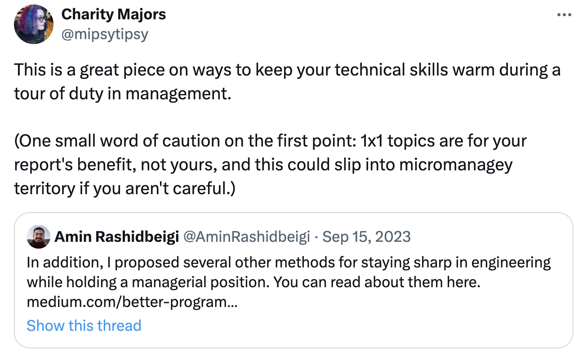

من هر سال و در روزهای پایانی میشینم و آن چه که گذشت رو مرور میکنم. یه نگاهی به اهدافی که اول سال تعیین کردم، ژورنالهایی که در طول سال نوشتم و اتفاقاتی که افتاده میاندازم و سعی میکنم مسیر سال بعدی رو برای خودم ترسیم کنم. در این نوشته از سالی که گذشت، موفقیتها و شکستها نوشتم.
کار
امسال وارد پنجمین سال فعالیتم در دیوار شدم. در سالی که گذشت مسئولیتها، تیم و موضوعاتی که روشون کار میکردم رو تغییر دادم.
از لیدرشیپ تا IC
در چند سال گذشته نقش مدیر مهندسی رو در شرکت دیوار داشتم. در این نقش، اصلیترین وظایف من شامل اطمینان از سرعت رشد و کیفیت فنی محصول، رشد افراد تیم و همکاری با مدیران محصول برای کاهش خطا در تصمیمگیریها میشد. این نقش با وجود همهٔ خوبیها و رشدهایی که در زمینهٔ مهارتهای نرم و البته مهارتهای فنی سطح بالا مثل تصمیمگیری، طراحی و نگهداری سیستمها برام داشت، باعث شده بود تا کمی از مهارتهای فنی سطح پایین مثل کدنویسی و عمیقتر شدن در تکنولوژیها فاصله بگیرم. اگر چه این فاصله لزوماً بد نیست و فرصت فکر کردن به مسائل دیگری رو بهم داده بود، ولی من با توجه به مسیر شغلی که برای خودم ترسیم کرده بودم نیاز داشتم بیشتر روی این مهارتها زمان بگذارم. برای برطرف کردن این دغدغه پست How Engineering Managers Can Avoid Technical Decay رو نوشتم و راهحلهای مختلفی برای فاصله نگرفتن از مهارتهای فنی سطح پایین پیشنهاد داده بودم. یکی از راهحلها پیروی از مسیر شغلی The Engineer-Manager Pendulum بود. Charity Majors، نویسندهٔ این نوشته، پستی که نوشته بودم رو در این توییت به اشتراک گذاشته بود و خیلی خوشحال شدم که این پستم رو خونده بود :))  با وجود امتحان راهکارهایی که در اون پست نوشته بودم، کماکان به اون اهدافی که میخواستم نرسیدم. از طرفی مسیر شغلی «پاندول مدیریت-مهندسی» شیوهای بود که به نظرم هوشمندانه و منطقی میرسید. به همین دلیل تصمیم گرفتم تا از مدیریت تیم فاصله بگیرم و در تیم دیگری Individual Contributor باشم تا بتونم روی مهارتهایی که در نظر داشتم تمرکز کنم. به همین دلیل از اواسط بهار عضو تیم Search دیوار شدم. با این تغییر فرصت بیشتری برای عمیقتر شدن در زبان برنامهنویسی داشتم، خیلی بیشتر با Go کد زدم و همچنین به میزان قابل توجهی با Elasticsearch کار کردم.
تیم Search
محصول Search معمولاً عضو جدا ناشدنی شرکتها و محصولهای تکنولوژی محوره. من هم همواره دوست داشتم فرصتی پیش بیاد تا با چالشهای جستجو در مقیاس بالا مواجه بشم. عضو شدن در تیم جستجوی دیوار کمکم کرد تا در زمینهٔ نحوهٔ عملکرد سیستمهای جستجو، طراحی، نگهداری و چالشهای مختلف این سیستمها از جمله جواب دادن به ریکوستهای با تعداد زیاد و همچنین حل پیچیدگیهای مربوط به زبانهای مختلف بیشتر یاد بگیرم.
یکی از اتفاقهای خوبی که برای من در این تیم افتاد این بود که فرصت این رو داشتم که از ابتدای همفکری و طراحی تا پیادهسازی و لانچ محصول vector search درگیر باشم و زمان زیادی روی این موضوع بگذارم. اگر نمیدونید جستجوی برداری چیه پیشنهاد میکنم این ویدیوی کوتاه رو ببینید.
مطالعه
امسال هم مثل همیشه زمان زیادی رو به مطالعهٔ کتاب، پستهای بلاگ فنی شرکتهای تکنولوژی محور و همچنین نوشتههای بلاگهای شخصی اختصاص بدم. با این تفاوت که امسال اگر نوشته یا کتابی رو میخوندم و برام جذاب و آموزنده بود، سعی میکردم بقیه نوشتههای نویسنده رو هم بخونم تا هم اون فرد رو بهتر بشناسم و هم در راستای یادگیری کریستالی قدم بردارم. در همین راستا چندین کتاب از آلبر کامو، نوشتههای زیادی از محمدرضا شعبانعلی، نوشتهها و ویدیوهایی از Naval، Will Larson و Martin Fowler خوندم و دیدم.
من معمولاً خلاصهای از چیزهایی که میخونم و یاد میگیرم رو در کانال تلگرامم میذارم. در ادامه هم کتابهایی که خوندم رو لیست میکنم.
کتابها
کاری / توسعهٔ فردی
- کتاب The Clean Coder از Robert C. Martin
- کتاب Show Your Work از Austin Kleon
- کتاب Zero to One از Peter Thiel
- قسمتهایی از کتاب Elasticsearch: The Definitive Guide از Clinton Gormley و Zachary Tong
- قسمتهایی از کتاب Software Architecture in Practice از Len Bass و بقیه
داستان / ناداستان
- کتاب اعتقاد بدون تعصب از Peter L. Berger و Anton Zijderveld
- کتاب فلسفهٔ تنهایی از Lars Svendsen
- کتاب سقوط از Albert Camus
- کتاب بیگانه از Albert Camus
- قسمتهایی از کتاب طاعون از Albert Camus
- قسمتهایی از کتاب جامعهشناسی از Anthony Giddens
نوشتن
از اهدافی که سال قبل برای خودم تعیین کرده بودم، بیشتر نوشتن بود. یک ایده هم که اگر چند نفر سوالی مشابه از من پرسیدن، جواب رو در قالب یک پست بنویسم و لینکش رو براشون بفرستم.
توی این مدت این نوشتهها رو منتشر کردم:
- چه سنی برای شروع برنامهنویسی دیر است؟ از مجموعهٔ شروع برنامهنویسی
- مدیریت بدهیهای فنی
- چرا به منتور نیاز داریم؟
- Improve Onboarding through the Magic of Storytelling
- Navigating Extra Work in Programming Teams
- Go Test Doubles by Example
بعد از مدتی متوجه شدم که نوشتن در وبلاگ انرژی خوبی از من میگیره. چون جدا از روح نوشته، باید برای انتخاب و یا تولید تصویر، ویرایش متن و بقیهٔ قسمتها وقت میگذاشتم. این موضوع باعث شده بود که ایدههای زیادی رو در لیستم مینوشتم اما انتشارش رو به آینده موکول میکردم. بعداً هم معمولاً فضای ذهنی متفاوتی داشتم و در نتیجه هیچوقت به مرحله انتشار نمیرسید. Naval میگه:
Be impatient with actions, patient with results.
در همین راستا تصمیم گرفتم که موضوعاتی رو که در موردشون میخوام بنویسم رو خیلی سریعتر، غیررسمیتر و در یک محیط سادهتر منتشر کنم. این شد که نوشتن در کانال تلگرامم رو هم شروع کردم که تا اینجا برام تجربهٔ خیلی مثبتی بوده.
منتورشیپ
من همواره از جلساتی شبیه به اشتراک دانش و یا جلسات 1on1 لذت میبرم. توی این جلسهها جدا از این که اگر چیزی بلد باشم رو به دیگران منتقل میکنم که خود این موضوع باعث مرور دانستههام و تثبیتشون در ذهنم میشه، از دیگران و نظرات مختلفشون هم یاد میگیرم. امسال تصمیم گرفتم به صورت محدود جلسات منتورشیپ بلندمدت (حداقل یک ماه / چهار جلسه) داشته باشم. در همین راستا صفحهٔ «زمینههایی که میتونم کمک کنم» رو ایجاد کردم و در ادامه با سه mentee جلسات منتورشیپ هفتگی تعیین کردم. یکی از چالشهای جذاب این جلسات برای من، چیدن مسیرهای یادگیری متفاوت برای افراد مختلف و بر اساس تجربه و دانش متفاوتشون بود.
سلامتی
امسال تصمیم گرفتم یک ورزش قدرتی رو شروع کنم و تلاش کنم برای مدت زمان طولانی ادامهاش بدم. اهمیت داشتن یک برنامه ورزشی قدرتی برای ما که معمولاً ساعات زیادی رو پشت میزمون میشینیم رو در این ویدیو میتونین ببینین. بعد از امتحان چند ورزش مختلف، تصمیم گرفتم ورزش Calisthenics رو شروع کنم. این ورزش بیشتر بر روی ساختن عضله به کمک تمرینهایی با وزن بدن و همچنین افزایش چابکی تمرکز داره. اگر نمیدونین Calisthenics چیه پیشنهاد میکنم توی یوتیوب ویدیوهاش رو ببینین. من در شش ماههٔ دوم سال به صورت تقریباً مرتب و هر هفته سه جلسه تمرینی این ورزش رو ادامه دادم.
همزمان با شروع کردن ورزش سعی کردم دانشم رو در زمینهٔ تغذیه و نحوه کارکرد بدن بیشتر کنم و در نتیجه بر روی رژیم غذایی و لایف استایلم تغییراتی ایجاد کردم. برای مثال قند مصنوعی و فستفود رو به مقدار قابل توجهی کاهش دادم و سعی کردم به جاش غذاهای پروتئیندار و کربوهیدراتدار و فیبردار مصرف کنم. با همین تغییر ساده و البته در ترکیب با ورزش تونستم چربی بدنم رو ۳ درصد کم کنم.
اشتباهات و نرسیدنها
در قسمتهای قبلی از موضوعاتی که خوب پیش رفته بودن نوشتم. اما معمولاً یادگیریها از شکستها و اشتباهات به دست میاد؛ پس اینجا لیستی از مواردی که از نظرم خوب پیش نرفتن مینویسم.
- یکی از موضوعاتی که به نظرم خوب پیش نرفت، پیش بردن تصمیمهای زیاد با ریسک بالا در زندگی شخصی و کاریم به صورت همزمان بود. این تصمیمها باعث شدن که مدت زمان قابل توجهی استرس و فشار زیادی رو تحمل کنم که در نهایت خیلی خسته شدم. احتمالاً باید بهتر مدیریتشون میکردم و چندین موضوع رو باهم پیش نمیبردم.
- تغییر نقش در شرکت و دنبال کردن مسیر شغلی «پاندول مدیریت-مهندسی» در کنار همهٔ ویژگیهای مثبت، معایبی هم داشت که در ابتدا در نظرم نیومده بود. این معایب در ابتدای تصمیمگیری میتونست بهم کمک کنه که بهتر trade-off کنم. این موضوع مقداری مفصله و بعداً بیشتر در موردش مینویسم.
- یاد گرفتم که یک سیستم برای جلوگیری از بینظمی، نیاز به هدف، ماموریت و چشمانداز داره. این سیستم میتونه زندگی شخصی، جایی که کار میکنیم و یا هر مجموعهٔ دیگری باشه. تنها در حالتی میشه بدون چشمانداز از بینظمی جلوگیری کرد که هدف موقت، خودِ پیدا کردن چشمانداز باشه.
- فهمیدم که معذرتخواهی بعد از یک اشتباه، بدون قبول کردن کامل مسئولیت و اقدام برای جبران خسارت به وجود اومده خیلی ارزنده نیست و صرفاً کمی از معذرت خواهی نکردن بهتره.
جمعبندی
امسال برام سالی پرفشار، پیچیده و پر از تصمیمهای مهم بود و موضوعات زیادی رو پیش بردم. فکر میکنم «نوشتن» در طول مسیر خیلی بهم کمک کرد که بتونم ذهنم رو مرتب نگه دارم و رو به جلو حرکت کنم.
از طرفی هم برای سال جدید خیلی هیجان دارم و کم کم باید مسیر سال جدید رو برای خودم ترسیم کنم.
اگر این نوشته براتون مفید بود، پیشنهاد میکنم که عضو کانال تلگرام و یا مشترک خبرنامهٔ ایمیلی بشین تا هم شما سریعتر از نوشتههای بعدی مطلع بشین و هم من بهتر بشناسمتون :)